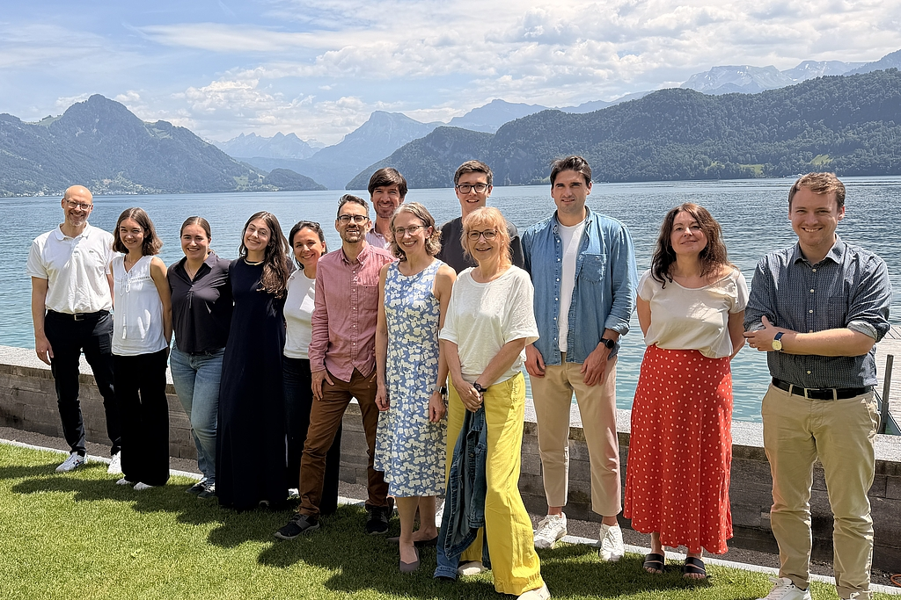
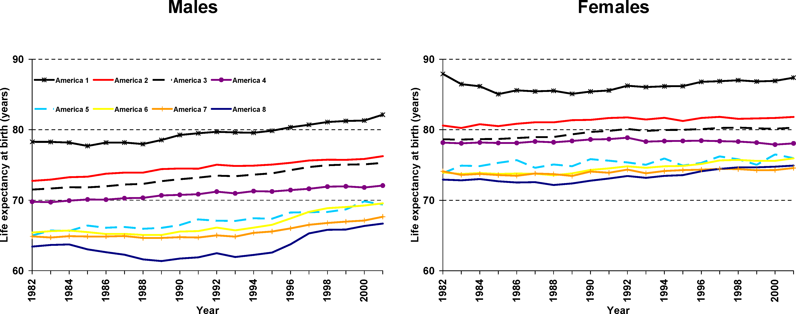
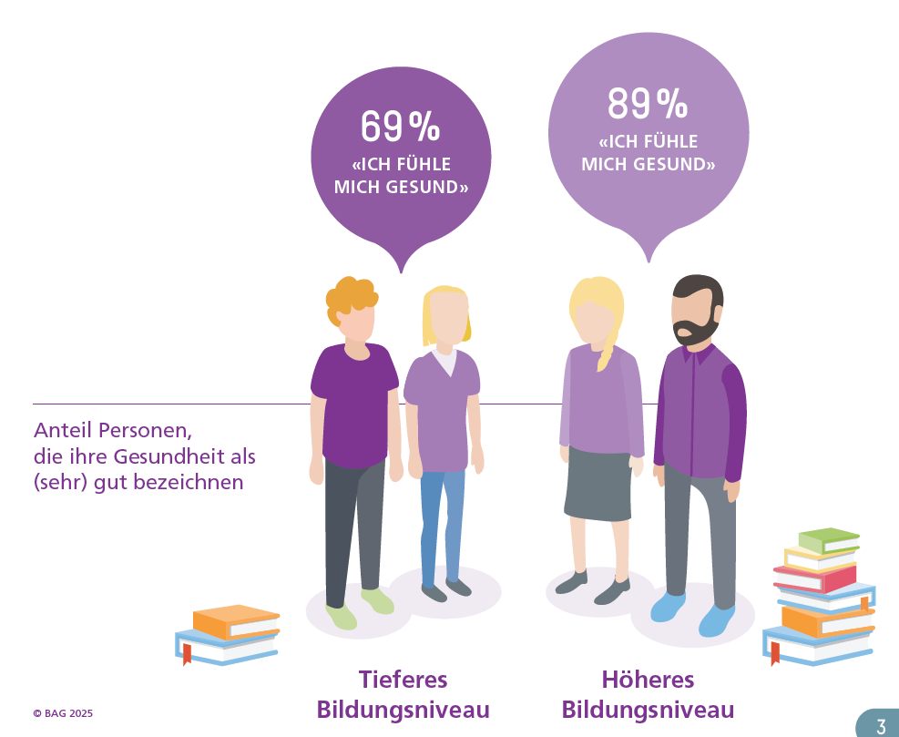
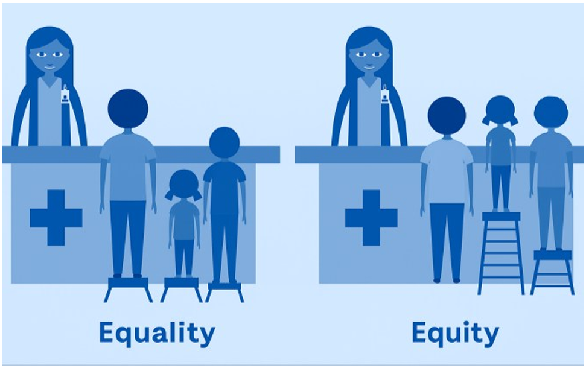
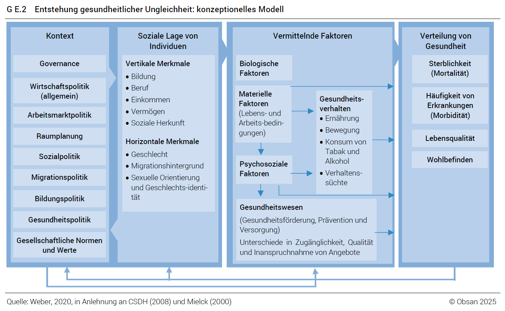

1. What is health inequality?
17 September 2026
Why do some population groups experience systematically worse health than others?
This course examines how health inequalities are measured and explained, why they persist even in affluent countries such as Switzerland, and what public policy can — and cannot — do about them.
Bainvgnieu!1 Welcome!

I’m David Weisstanner, Assistant Professor of Health and Social Policy and co-director of the Center for Health, Policy and Economics (CHPE) at the University of Lucerne.
I am interested in how health and social policies shape people’s lives, why inequalities arise and persist, and how citizens respond to policy and social change.
About you
To help me get to know the group and your backgrounds and interests, please complete this short questionnaire.
How this course will work
This course uses a modular teaching format. Sessions combine short inputs, examples and evidence, individual or group work, and discussion.
The course website is our common workspace. It contains the core material for each session and will often be used directly in class. Slides will be used selectively where they add value.
For each session, a print version of the website material will also be provided as a handout. You do not need to take notes on everything you see on screen — the core material will remain available on the website and in the handout.
Health inequalities are well known
People’s chances of living a long and healthy life differ substantially — not only between countries, but also between population groups within wealthy societies.
International examples…
20.7 years The difference in life expectancy between the highest- and lowest-life-expectancy groups in the “Eight Americas” study.
The classic “Eight Americas” study divided the US population into eight groups based on race, geography and socioeconomic characteristics. In 2001, life expectancy differed by 20.7 years between the groups at the extremes.

Large differences can also occur within cities. In London, life expectancy varies substantially between neighbourhoods only a few kilometres apart.
Explore: Lives on the Line — life expectancy along the London Underground
Glasgow provides another well-known example of large spatial health inequalities.
…and health inequalities in Switzerland
Switzerland has one of the highest average life expectancies in the world and a well-resourced healthcare system. Yet health is not equally distributed across the population.
The recent 2025 Obsan report on health inequalities in Switzerland documents systematic differences by education, income, gender, migration background and place of residence.
For example, in the 2022 Swiss Health Survey, 89% of people with tertiary education reported good or very good health, compared with 69% among people with compulsory education.

Differences are also found for more objective outcomes. The recent Obsan findings show, for example, that men die twice as often from preventable causes as women, and individuals with lower education face an 81% higher risk of premature death from conditions that could have been prevented through healthcare or prevention (Burla 2025).
Income, illness and healthcare use
Similar differences also show up directly in the healthcare system. A 2026 analysis by the University of Basel for Helsana linked health-insurance data with official income data.
It found that people with lower household incomes:
- suffered more frequently from chronic diseases;
- used more medical services and had longer hospital stays;
- incurred higher healthcare costs; but
- made less use of preventive services.
For example, depression was around three times as common in the lowest income category as in the highest. Chronic pain was also more than three times as common (Felder et al. 2026).
At the same time, lower-income groups were less likely to participate in colorectal-cancer screening — even where cantonal screening programmes were free of charge (Felder et al. 2026).
A crisis can amplify existing inequalities
The COVID-19 pandemic made these differences particularly visible.
According to the Federal Office of Public Health, socially disadvantaged groups in Switzerland were more likely to become seriously ill with COVID-19.
People with only compulsory education had an 80% higher risk of hospitalisation than people with tertiary education. The BAG also documents higher risks among migrant populations and people living in disadvantaged neighbourhoods (BAG 2024).
The geography of health inequality
Social disadvantage is not distributed randomly across Switzerland.
An interactive map based on the Swiss Neighbourhood Index of Socioeconomic Position shows substantial socioeconomic differences within cities and municipalities — sometimes across only a road, railway line or neighbourhood boundary.
Explore the interactive map of socioeconomic differences in Switzerland
Why does this matter for Swiss healthcare?
- Different needs: some population groups experience substantially more illness and therefore require more healthcare.
- Different patterns of access and use: treatment and prevention are not used equally across groups.
- Planning and organisation: knowing where needs and barriers are concentrated matters for prevention, service delivery and resource allocation.
Taking a step back: What is health inequality?
The examples above describe systematic differences in health between population groups. Definitions in the literature vary somewhat, including in whether they incorporate ideas such as avoidability and unfairness (McCartney et al. 2019; Braveman 2025).
For this course, we use health inequality first as a descriptive concept:
Health inequality refers to systematic differences in health outcomes between individuals or social groups.
Examples include differences in:
- life expectancy and mortality;
- disease and disability; and
- self-rated health and wellbeing.
Importantly, health inequality is initially a descriptive concept. Observing a difference does not by itself tell us whether it is unfair, avoidable, or caused by social disadvantage.
(In)equality and (in)equity
These concepts are related, but they are not the same, and terminology is not used completely consistently across disciplines and countries (Braveman 2025; Bergen et al. 2025).
In this course, we use the terms as follows:
- (In)equality describes observed differences, e.g. (un)equal treatment, resources or outcomes.
- (In)equity introduces a normative judgement about what would constitute a fair distribution.
Health equity therefore goes beyond documenting inequality: it asks whether differences are unfair or unjust, and whether different groups may require different resources or support.

This course focuses primarily on health inequality. We first ask who is healthier, how large the differences are, and what explains them. Whether a particular inequality is unfair is an additional normative question.
This distinction also affects how we communicate empirical evidence. Throughout the course, we will therefore try to state explicitly which health outcome, which population groups and which type of difference we are describing (Bergen et al. 2025).
Session 2 turns this principle into an empirical question: how can we measure a health inequality?
A roadmap for this course
The conceptual model below provides a useful framework for organising the different topics covered throughout the semester.
It distinguishes between the broader context, people’s social position, the intermediary factors through which social conditions may affect health, and the resulting distribution of health.
The model does not by itself explain why health inequalities arise. Instead, it helps structure the questions we will examine throughout the course and motivates the selection of topics in the syllabus.

Reading the model
Context
Economic, political, legal and cultural conditions — including social, education and health policy — shape the distribution of resources and opportunities.
Social position
People occupy different positions in society. Important vertical dimensions include education, income, wealth and occupational position. Relevant horizontal dimensions include gender, migration background, age, sexual orientation and place of residence.
Intermediary factors
Social position affects exposure to resources and risks, including:
- material living and working conditions;
- psychosocial factors such as stress and social support;
- health-related behaviour; and
- access to, quality of and use of healthcare.
Health outcomes
These processes can result in systematic differences in mortality, morbidity, quality of life and wellbeing.
This model provides a roadmap for the course: over the semester, we will examine how context and social position are related to health, which mechanisms may connect them, where healthcare enters the picture, and what role public policy may play.
Session overview
The course follows the same broad logic as the conceptual model. Over the semester, we move from describing and measuring health inequalities to examining their distribution, explanations and policy implications.
We will cover:
- Measurement and comparison — how large are health inequalities, and how do they vary across countries and over time?
- Perceptions and explanations — how do people understand health inequalities, and which mechanisms may explain them?
- Dimensions of inequality — socioeconomic position, gender, migration and ethnicity, intersectionality, the life course, and place.
- Healthcare — how do access, affordability and healthcare use relate to health inequalities?
- Public policy — which policies and institutions may reduce, reproduce or otherwise affect health inequalities?
The empirical project
Alongside the substantive topics, you will develop your own empirical analysis of health inequality using international survey data.
The aim is to move from reading about health inequalities to analysing them yourself:
Research question → concepts → variables → comparison → analysis → interpretation → conclusion
The data
We will work primarily with two major cross-national survey programmes:
- the European Social Survey (ESS); and
- the International Social Survey Programme (ISSP).
Both provide individual-level survey data that allow us to examine health outcomes alongside socioeconomic and demographic characteristics, countries, time periods, healthcare experiences and attitudes.
How the project develops
The empirical work is integrated throughout the semester. At the beginning, you will work with guided exercises and predefined variables. As the course progresses, you will make increasingly independent choices about your research question, measures, comparisons and analysis.
The final paper brings these elements together in a small independent empirical study of health inequality.
The next two sessions: guided self-study
Sessions 2 and 3 are guided self-study sessions. There is no regular classroom meeting.
The course website provides the explanations, step-by-step instructions and ESS/ISSP exercises. Work through each session in the order presented.
- Session 2: measuring health inequality and becoming familiar with the data
- Session 3: comparing health inequalities across countries and over time
If anything is unclear, or you encounter problems with the data or code, please contact me.
References
Footnotes
Bainvgnieu means “welcome” in Puter, the Romansh idiom spoken in the Upper Engadine. See the Dicziunari Puter of the Uniun dals Grischs.↩︎